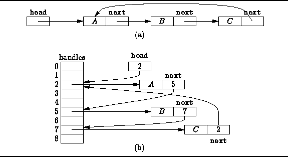

Data Structures and Algorithms
with Object-Oriented Design Patterns in Java
Data Structures and Algorithms
with Object-Oriented Design Patterns in JavaThe Java virtual machine specification does not prescribe how reference variables are implemented. A common approach is for a reference variable to be implemented as an index into an array of object handles . Every object instance has its own handle. The handle for an object typically contains a reference to a Class instance that describes the type of the object and a pointer to the region in the heap where the object data resides.
The advantage of using handles is that when the position in the heap of an object is changed, only the handle for that object needs to be modified. All other references to that object are unaffected because such references actually refer to the handle. The cost of using handles is that the handle must be dereferenced every time an object is accessed.
The mark-and-compact algorithm uses the handles in two ways: First, the marked flags which are set during the mark operation are stored in the handles rather than in the objects themselves. Second, compaction is greatly simplified because when an object is moved only its handle needs to be updated--all other objects are unaffected.
Figure  illustrates how object references
are implemented using handles.
Figure (a) shows a circular, singly-linked list
as it is usually drawn
and Figure (b) shows how the list
is represented when using handles.
Each reference variable actually contains an index into the array of handles.
For example, the head variable selects the handle at offset 2
and that handle points to linked list element A.
Similarly, the next field of list element A selects
the handle at offset 5 which refers to list element B.
Notice that when an object is moved, only its handle needs to be modified.
illustrates how object references
are implemented using handles.
Figure (a) shows a circular, singly-linked list
as it is usually drawn
and Figure (b) shows how the list
is represented when using handles.
Each reference variable actually contains an index into the array of handles.
For example, the head variable selects the handle at offset 2
and that handle points to linked list element A.
Similarly, the next field of list element A selects
the handle at offset 5 which refers to list element B.
Notice that when an object is moved, only its handle needs to be modified.

Figure: Representing object references using handles.
The handle is a convenient place in which to record information used by the garbage collection algorithm. For example, we add a boolean field to each handle, called marked. The marked field is used to mark live objects as follows:
void mark (Object p)Notice that this version of the mark method marks the object handles rather than the objects themselves.if (!handle[p].marked)
handle[p].marked = true; for each Object q referenced by p mark (q);
Once all of the live objects in the heap have been identified, the heap needs to be defragemented. Perhaps the simplest way to defragment the heap is to slide the objects in the heap all to one end, removing the unused memory locations separating them. The following version of the compact method does just this:
void compact ()This algorithm makes a single pass through the objects in the heap, moving the live objects towards the lower heap addresses as it goes. The compact method only modifies the object handles--object data remain unchanged. This algorithm also illustrates an important characteristic of the sliding compaction algorithm--the relative positions of the objects in the heap remains unchanged after the compaction operation. Also, when the compaction method has finished, the marked fields have all been set back to false in preparation for the next garbage collection operation.long offset = 0; for each Object p in the heap
if (handle[p].marked)
handle[p].object = heap.move (p, offset); handle[p].marked = false; offset += sizeof (p);
 Copyright © 1998 by Bruno R. Preiss, P.Eng. All rights reserved.
Copyright © 1998 by Bruno R. Preiss, P.Eng. All rights reserved.